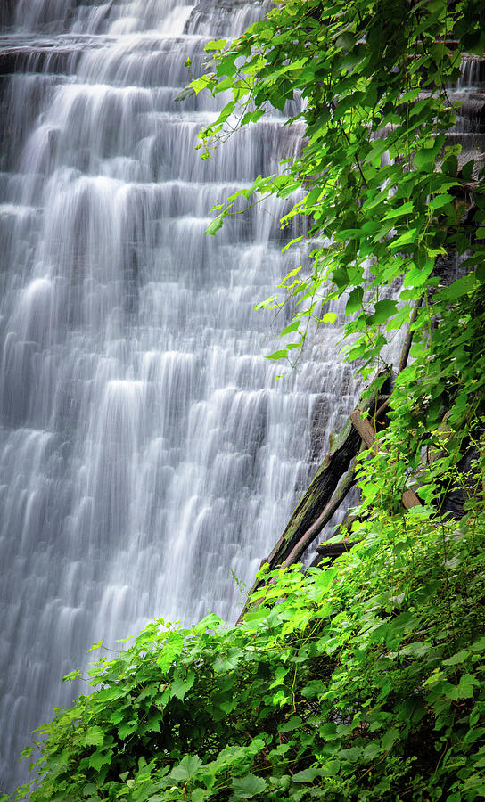
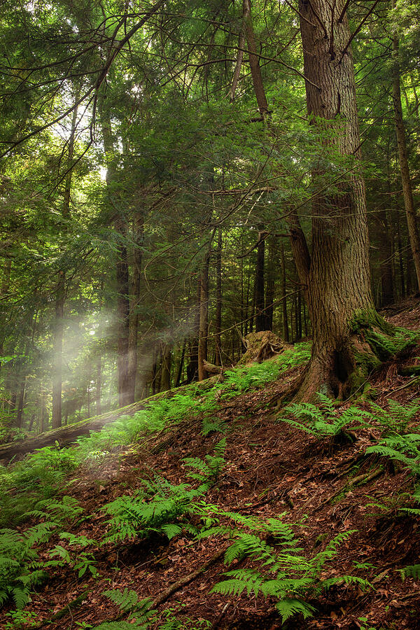

Senior Living Lounge
Lima Lake Foggy Sunrise
Warm Ohio lake atmosphere for senior living gathering rooms, healthcare lounges, and regional residential interiors.
Suggested sizes: 40x60 • 45x68 • 48x72Frames: warm oak • walnut • natural wood
Ohio Fine Art Photography
Based in Lima, Ohio, Dan Sproul creates atmospheric Ohio nature photography featuring Cuyahoga Valley National Park, Hocking Hills, Mohican State Park, Clifton Gorge, Lake Erie, Celina, local Northwest Ohio landscapes, waterfalls, forests, rivers, bridges, and seasonal Midwest scenery.
Ohio Landscape & Nature Photography
This page brings together Ohio nature photography prints, Ohio landscape wall art, Lima Ohio photography, and Northwest Ohio artwork from across the state. The emphasis is on place: quiet lakes, waterfalls, forests, river scenes, bridges, parks, lighthouse views, and seasonal Midwest atmosphere.
Ohio artwork can still work beautifully in healthcare, hospitality, office, senior living, and residential interiors, but this page is primarily organized for people searching by Ohio location, Ohio subject matter, and familiar regional landscapes.
Featured Interior Mockups
Click any mockup to enlarge the image, review application notes, and purchase the corresponding print.
Senior Living Lounge
Warm Ohio lake atmosphere for senior living gathering rooms, healthcare lounges, and regional residential interiors.
Lake House Entryway
Vertical Ohio lake artwork for entryways, lake homes, hospitality reception spaces, and regional interiors.
Lake Erie Living Room
Ohio lighthouse artwork with Lake Erie character for lake homes, living rooms, cottages, and regional collectors.
Ohio Country Home
Rustic Ohio barn artwork for farmhouse interiors, country homes, cabins, and collectors drawn to rural Midwest scenery.
Modern Residential
Fresh Ohio waterfall imagery for living rooms, wellness spaces, bedrooms, and calming residential interiors.
Modern Entryway
Vertical Ohio waterfall artwork for entry halls, stair landings, foyers, and collectors connected to Clifton Gorge and Yellow Springs.
Executive Office
Vertical Ohio waterfall artwork for offices, reception areas, consultation rooms, and professional interiors.
Healthcare Waiting Room
Regional Ohio calm for patient-facing spaces, clinics, and restorative waiting rooms.
Hospitality Lobby
Large-format Ohio nature artwork for hotel lobbies, lounges, and regional hospitality interiors.
Wellness / Spa
Soft water movement for wellness rooms, restorative spaces, and calming interior environments.
Quiet Luxury Residential
Warm Ohio seasonal atmosphere for residential, boutique hospitality, and wellness interiors.
Executive Office
Refined Ohio black-and-white artwork for offices, consultation rooms, and professional interiors.
Ohio Fine Art Photographer
Based in Lima, Ohio, Dan Sproul creates atmospheric landscape photography and environmental artwork inspired by Ohio’s forests, rivers, waterfalls, lakes, lighthouses, rural roads, barns, bridges, and seasonal Midwest scenery.
His Ohio artwork is created for collectors, homeowners, lake houses, businesses, interior designers, healthcare spaces, hospitality projects, and regional buyers looking for artwork connected to place rather than generic wall decor.
Lima Ohio Fine Art
Dan Sproul is based in Lima, Ohio and creates fine art nature photography for homes, offices, healthcare spaces, hospitality interiors, local businesses, and collectors throughout Northwest Ohio.
If you are looking specifically for Lima Ohio fine art, local wall art, or nature artwork created by a Lima-based photographer, the local fine art page gathers regional mockups, local ordering information, and artwork examples created around Lima and Northwest Ohio.
Local buyers may also contact Dan directly for personalized sizing recommendations, finish guidance, eligible local pickup, and direct-order options.
Explore Ohio Photography By Region
Use the interactive Ohio map or the compact location links to browse regional landscapes, waterfalls, forests, lighthouses, rivers, and familiar Midwest scenery.

Featured Ohio Destination
Explore original forest, waterfall, trail, bridge, and Northeast Ohio nature photography with field notes, residential mockups, professional interior applications, and direct print links.
Select a gold marker to open that location’s print collection.

From the Field · Mohican State Park
Beginning around the Lyons Falls trail system, I spent a day photographing mature forest, ferns, moss, sandstone, wildlife, old roots, and changing woodland light. The field guide includes my route, camera gear, limited-cell-service notes, photography tips, and the finished images from the day.
Ohio Through the Seasons
Ohio landscape photography has strong seasonal variety, from spring blossoms and summer waterfalls to autumn parks and quiet winter scenes.
Lima spring trees, early forest color, waterfalls, wet trails, and soft new growth.
Lake reflections, lighthouse scenes, river movement, green forests, and waterfall photography.
Warm parks, gold leaves, wooded trails, foggy mornings, and Midwest autumn atmosphere.
Snow-covered trees, quiet bridges, monochrome landscapes, frozen water, and soft winter light.
Why Ohio Landscapes Work
Ohio nature photography can feel personal because it reflects places people recognize: local lakes, familiar parks, wooded trails, rivers, bridges, waterfalls, and seasonal Midwest light.
For collectors and homeowners, these prints can connect a room to home, travel memories, family roots, lake weekends, or favorite Ohio places. For interiors, Ohio artwork can add local identity without feeling overly literal or tourist-focused.
Ohio Artwork for Collectors
Ohio nature photography works for people who want artwork connected to where they live, where they grew up, where they travel, or where they have family roots.
Landscape prints for living rooms, bedrooms, entryways, offices, and warm residential interiors.
Lake scenes, lighthouse reflections, and water imagery for lake homes and coastal-inspired Ohio interiors.
Regional artwork for retirement gifts, housewarming gifts, Ohio natives, alumni, and corporate gifts.
Artwork connected to familiar local places and seasonal Midwest atmosphere.
Oversized Ohio prints for feature walls, offices, gathering rooms, and lake house entryways.
Ohio artwork is available in multiple formats and sizes through the print catalog.
Ohio Interior Artwork
While this page is organized around Ohio photography and regional artwork, many pieces can also support commercial interiors that need a stronger sense of place.
Regional artwork for residential projects, lake homes, offices, senior living communities, hospitality spaces, and design presentations.
Nature photography for waiting rooms, corridors, wellness rooms, clinics, therapy offices, and patient-facing interiors.
Ohio landscapes, lake imagery, waterfalls, and regional wall art for boutique hotels, guest spaces, restaurants, and lodges.
Room mockups help designers and buyers evaluate scale, placement, framing, and overall atmosphere before selecting artwork.
Ohio prints are available as framed prints, canvas, acrylic, metal, and fine art paper in sizes suitable for homes and commercial interiors.
Ohio artwork can help interiors feel connected to local landscapes, landmarks, seasonal memory, and regional character.
Ohio Artwork FAQ
The Ohio artwork includes Lima and Northwest Ohio, Cuyahoga Valley National Park, Hocking Hills, Mohican State Park, Clifton Gorge, Ohio lake scenes, waterfalls, forests, parks, bridges, Marblehead Lighthouse, Lake Erie, and seasonal Midwest landscapes.
Many images on this page were created in Ohio, including work from Lima, Northwest Ohio, Cuyahoga Valley National Park, Hocking Hills, Mohican, Clifton Gorge, Lake Erie, Celina, Grand Rapids, waterfalls, rivers, parks, barns, and rural Ohio landscapes.
Yes. The collection includes Ohio lake scenes, lighthouse imagery, water reflections, Lake Erie-inspired artwork, Celina lake imagery, and regional lakefront subjects.
Yes. Many Ohio images are available as framed prints, canvas, acrylic, metal, and fine art paper in multiple sizes through the print catalog.
Yes. Many Ohio landscapes, waterfalls, lake scenes, barns, and lighthouse images work well as large statement pieces for living rooms, offices, lake homes, healthcare spaces, and hospitality interiors.
Yes. Designers can request artwork guidance, room-specific recommendations, mockup support, and collection suggestions for residential, healthcare, hospitality, senior living, and commercial projects.
Popular subjects include Cuyahoga Valley forests and waterfalls, Hocking Hills waterfalls, Mohican forests, Clifton Gorge trails, Lima landscapes, Marblehead Lighthouse, Lake Erie scenes, Ohio barns, bridges, rivers, autumn color, and winter stillness.
No. The page is useful for collectors, homeowners, Ohio natives, lake house owners, offices, designers, businesses, and anyone looking for Ohio nature photography prints.
Yes. Ohio nature photography can be selected for healthcare waiting rooms, wellness spaces, hospitality lobbies, guest suites, offices, senior living communities, and regional commercial interiors.
You can browse individual Ohio prints from the featured images on this page or visit the full Ohio nature and landscape print catalog through Dan Sproul’s print store.